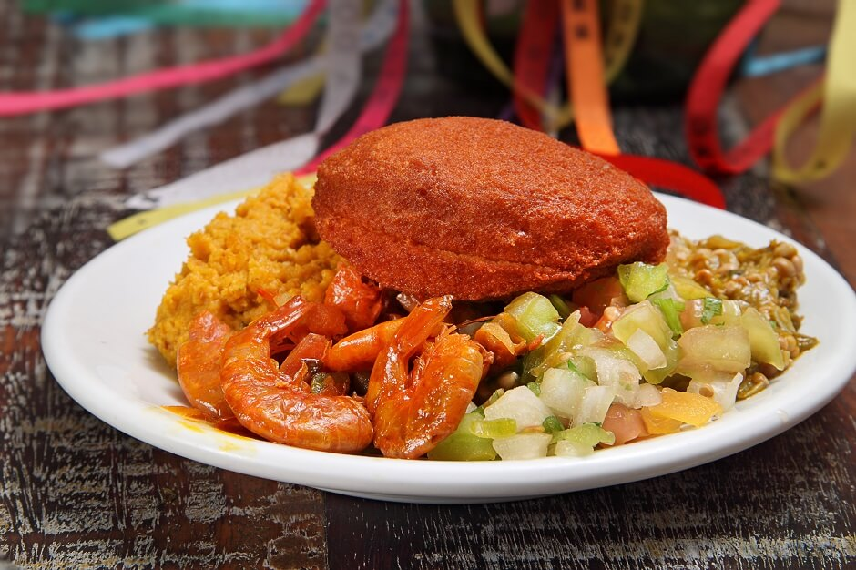

A Cozinha da Cris é um espaço gastronômico que transcende o ato de se alimentar. Nossa proposta é oferecer uma experiência cultural e sensorial através da culinária brasileira e internacional.
Trabalhamos com reservas personalizadas para proporcionar um ambiente acolhedor e exclusivo para nossos clientes.
Cada prato é preparado com amor, tradição e criatividade.